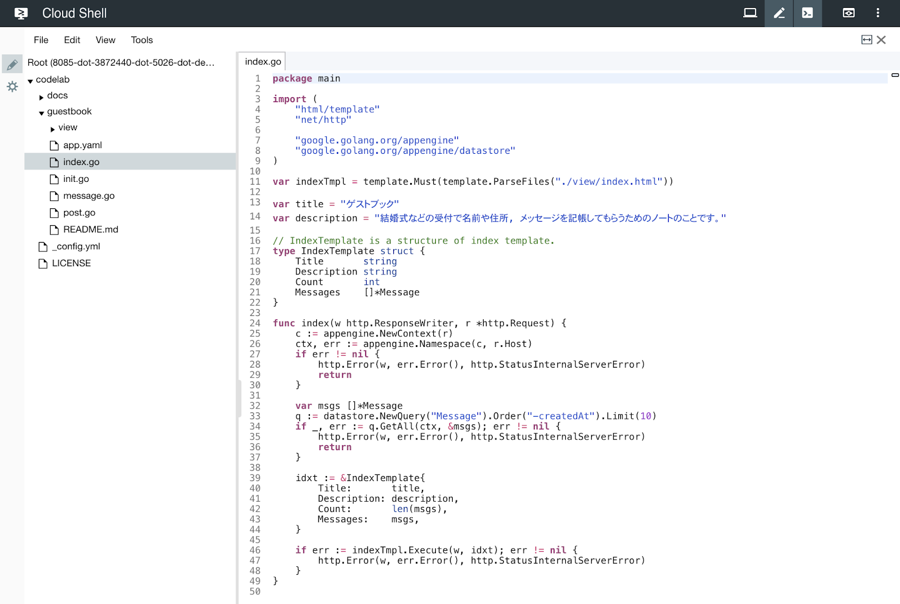
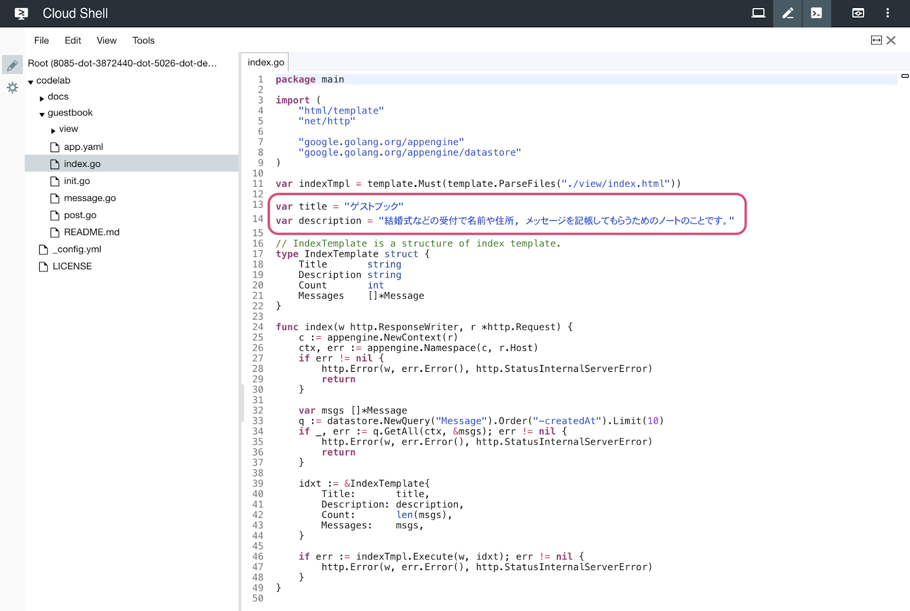
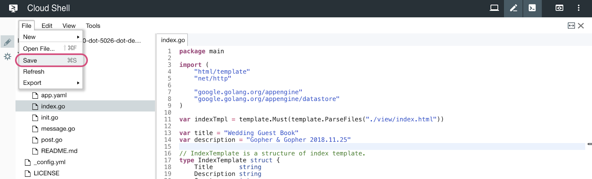
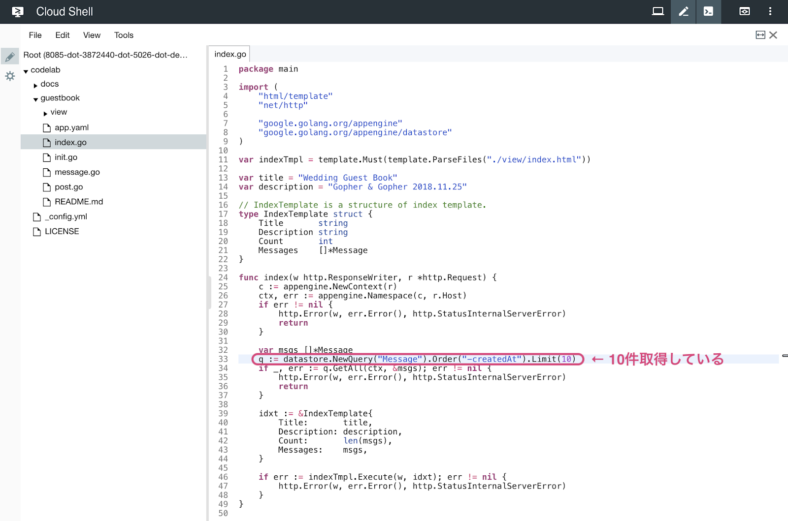
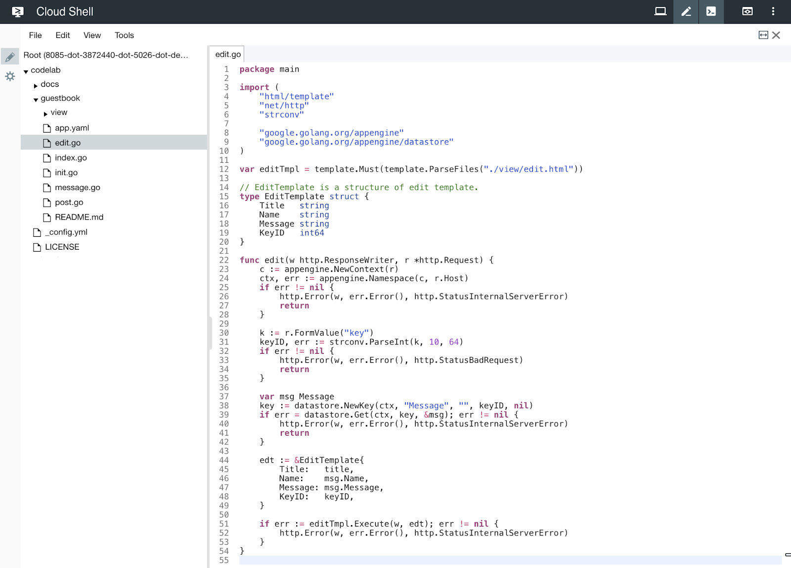
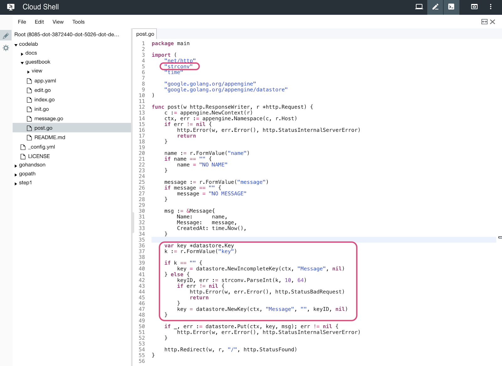

このコードラボでは, 実際に動く Go のソースコードを触ってみることで, Google App Engine でのアプリケーションの仕組みを知ることができます。

ゲストブックの仕組みを利用して, 一般的な入出力を体験します。
Google App Engine とは
Google App Engine は Google が Google Cloud Platform 上で提供しているインフラ上でアプリケーションを実行できる PaaS です。
サーバの運用・構築の手間がかからず, ニーズに合わせたスケーリングが容易であることが利点です。
Go の開発環境は必要でしょうか？
このコードラボではGoogle Cloud Shell を利用するため, 手元でGo の開発環境を用意する必要はありません。
Google Cloud Shell の詳しい説明と使い方は, Google Cloud Shell で Go の開発をはじめよう を参照してください。
プロジェクトにアクセスする
Google Cloud Shell で Go の開発をはじめよう の手順に従って, Google Cloud Console にアクセスしましょう。
GitHubからコードラボで利用するサンプルコードを取得しましょう。
Google Cloud Shell で Go の開発をはじめよう の手順に従って, git clone します。
$ git clone https://github.com/WomenWhoGoTokyo/codelab.gitcodelab/guestbook というディレクトリが作られていることを, Google Cloud Shell で確認しましょう。
$ cd codelab/guestbook
$ ls
README.md app.yaml index.go init.go message.go post.go viewgit clone したファイルの中に, app.yaml があります。これは Google App Engine上で動かす アプリケーションの設定ファイルです。
Google Cloud Shell で Go の開発をはじめよう の手順に従って, Goolge Cloud Shell のエディタで codelab > guestbook > app.yaml を開いてみましょう。

runtime: go
api_version: go1.9
handlers:
url: /*
script: _go_app
secure: always利用する言語やそのバージョン等を設定することができます。
取得した Go のプログラムを Google App Engine に公開してみましょう。
app.yamlが配置されている場所でコマンドを実行します。- アプリケーションIDとバージョンは, コマンド引数で指定します。
- 今回, バージョンには各々異なる ID を利用します。異なるバージョンでアプリケーションを公開することで, お互いのアプリケーションの上書きを避けます。
なお, バージョンには, アルファベット小文字, 数字, ハイフンのみが利用可能です。
$ goapp deploy --application {アプリケーションID} --version {バージョン} .公開したアプリケーションを確認しましょう。
アクセスする
Google Cloud Platform の AppEngine > バージョン をクリックすると, 公開するコマンドの引数で利用したバージョンを一覧で確認できます。

一覧で, バージョン名をクリックします。

ブラウザが立ち上がり, 下記のような画面が表示されると成功です。

お名前, メッセージに適当な文字列を入力して, 送信ボタンを押下してみましょう。

データを見る
Google Cloud Platform 上でもデータを確認することができます。
データストア > エンティティ をクリックしましょう。

先程入力したデータが格納されていることを確認できます。


Google Cloud Shell で Go の開発をはじめよう の手順に従って, Goolge Cloud Shell のエディタを立ち上げます。
文字列が書いてあるファイルを開く
codelab > guestbook > index.go を開きましょう。

文字列を変更する
index.go の下記の部分を好きな文字列に変更します。

Before:
var title = "ゲストブック"
var description = "結婚式などの受付で名前や住所, メッセージを記帳してもらうためのノートのことです。"After (例):
var title = "Wedding Guest Book"
var description = "Gopher & Gopher 2018.11.25"File > Save を選択して, 保存します。

変更したプログラムを公開する
コンソールでコマンドを実行して, Go のプログラムを公開しましょう。
$ goapp deploy --application {アプリケーションID} --version {バージョン} .アプリケーションを確認する
ブラウザを更新しましょう。
タイトルとその下の文言が変更されていることを確認しましょう。

まず, 10件ほど登録してみましょう。

さらにもう1件登録しましょう。
全部で11件登録していますが, 表示は10件のままで, 一番古いメッセージが表示されなくなりました。

これを表示できるようにしましょう。
文字列が書いてあるファイルを開く
codelab > guestbook > index.go を開きましょう。
件数を変更する
index.go の下記の部分を, 15件まで取得するように変更します。

Before:
q := datastore.NewQuery("Message").Order("-createdAt").Limit(10)After:
q := datastore.NewQuery("Message").Order("-createdAt").Limit(15)File > Save を選択して, 保存します。
変更したプログラムを公開する
コンソールでコマンドを実行して, Go のプログラムを公開しましょう。
$ goapp deploy --application {アプリケーションID} --version {バージョン} .アプリケーションを確認する
ブラウザを更新しましょう。
11件表示されていることを確認しましょう。15件までは表示できます。

お名前とメッセージを変更できるようにします。

あらかじめ, ソースコードの一部は用意されています。
- 一覧に編集画面へのリンクを作成するためのデータの用意
- 編集画面のHTML
一覧に編集リンクを追加する
変更箇所のファイルを開く
codelab > guestbook > view > index.html を開きましょう。

一覧にリンクを足す
一覧に編集画面へのリンクを足します。
リンク先は ./edit?key={key} となります。

Before:
<div class="messages">
{{if lt 0 .Count}}
<div class="message">
<div class="message-header">お名前</div>
<div class="message-header">メッセージ</div>
</div>
{{end}}
{{range .Messages}}
<div class="message">
<h2 class="message-name">{{.Name}}</h2>
<p class="message-text">{{.Message}}</p>
</div>
{{end}}
</div>After:
<div class="messages">
{{if lt 0 .Count}}
<div class="message">
<div class="message-header">お名前</div>
<div class="message-header">メッセージ</div>
<div class="message-header">編集</div>
</div>
{{end}}
{{range .Messages}}
<div class="message">
<h2 class="message-name">{{.Name}}</h2>
<p class="message-text">{{.Message}}</p>
<div class="message-link"><a href="./edit?key={{.KeyID}}">編集する</a></div>
</div>
{{end}}
</div>File > Save を選択して, 保存します。
変更したプログラムを公開する
コンソールでコマンドを実行して, Go のプログラムを公開しましょう。
$ goapp deploy --application {アプリケーションID} --version {バージョン} .アプリケーションを確認する
まだリンク先のページはありませんが, 一覧にリンクが追加されました。

編集リンクをクリックしたら編集画面に遷移する
ファイルを新規作成する
codelab > guestbook > edit.go を新規作成しましょう。
File > New > File をクリックします。

edit.go と入力します。

編集画面のコードを書く
下記のように書きましょう。

package main
import (
"html/template"
"net/http"
"strconv"
"google.golang.org/appengine"
"google.golang.org/appengine/datastore"
)
var editTmpl = template.Must(template.ParseFiles("./view/edit.html"))
// EditTemplate is a structure of edit template.
type EditTemplate struct {
Title string
Name string
Message string
KeyID int64
}
func edit(w http.ResponseWriter, r *http.Request) {
c := appengine.NewContext(r)
ctx, err := appengine.Namespace(c, r.Host)
if err != nil {
http.Error(w, err.Error(), http.StatusInternalServerError)
return
}
k := r.FormValue("key")
keyID, err := strconv.ParseInt(k, 10, 64)
if err != nil {
http.Error(w, err.Error(), http.StatusBadRequest)
return
}
var msg Message
key := datastore.NewKey(ctx, "Message", "", keyID, nil)
if err = datastore.Get(ctx, key, &msg); err != nil {
http.Error(w, err.Error(), http.StatusInternalServerError)
return
}
edt := &EditTemplate{
Title: title,
Name: msg.Name,
Message: msg.Message,
KeyID: keyID,
}
if err := editTmpl.Execute(w, edt); err != nil {
http.Error(w, err.Error(), http.StatusInternalServerError)
}
}File > Save を選択して, 保存します。
変更箇所のファイルを開く
/edit にアクセスすると画面が表示されるようにします。
codelab > guestbook > init.go を開きましょう。

/edit にアクセスすると, edit.go の func edit(...) が呼ばれるようにします。

下記を追記しましょう。
http.HandleFunc("/edit", edit)File > Save を選択して, 保存します。
変更したプログラムを公開する
コンソールでコマンドを実行して, Go のプログラムを公開しましょう。
$ goapp deploy --application {アプリケーションID} --version {バージョン} .アプリケーションを確認する
一覧から編集リンクをクリックすると...
編集画面に遷移します。

編集画面で送信ボタンを押下すると変更を更新する
変更箇所のファイルを開く
codelab > guestbook > post.go を開きましょう。
更新をできるようにする
パラメータがあるときは更新を, ないときには新規追加をするように処理を変更します。

Before:
key := datastore.NewIncompleteKey(ctx, "Message", nil)After:
var key *datastore.Key
k := r.FormValue("key")
if k == "" {
key = datastore.NewIncompleteKey(ctx, "Message", nil)
} else {
keyID, err := strconv.ParseInt(k, 10, 64)
if err != nil {
http.Error(w, err.Error(), http.StatusBadRequest)
return
}
key = datastore.NewKey(ctx, "Message", "", keyID, nil)
}File > Save を選択して, 保存します。
変更したプログラムを公開する
コンソールでコマンドを実行して, Go のプログラムを公開しましょう。
$ goapp deploy --application {アプリケーションID} --version {バージョン} .アプリケーションを確認する
編集画面でフォームの中身を変更すると...

変更された内容が一覧に反映されます。

このコードラボでは, Google App Engine へのアプリケーションの公開や, 実際に動く Go のソースコードをベースとして, データの入力や取り出し, その表示方法に触れました。
ここで知ったことをきっかけに, Google App Engine と Go を利用したものづくりをもっともっと楽しんでいただけますように！と願っています。